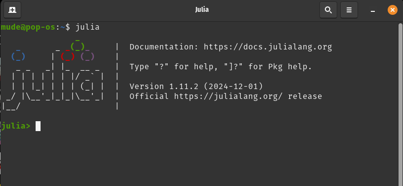
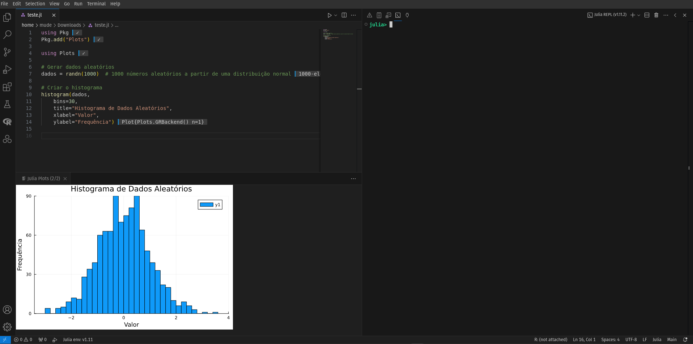
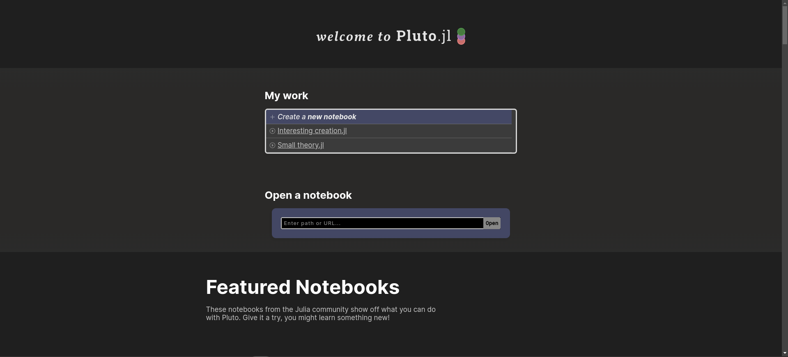

curl -fsSL https://install.julialang.org | shIntrodução à linguagem Julia
Uma breve introdução à linguagem Julia
Julia
Programação
Contextualização
Há muito tempo ouço falar, isso desde 2014 ou 2015, que a linguagem Julia irá desbancar as linguagens R e Python em termos de programação e que eu deveria focar meus esforços em aprendê-la. Bom, 10 anos depois, me parece que o R e o Python ainda dominam o mercado da Ciência de Dados e o mundo acadêmico, principalmente da Ecologia.
Mas notei algumas tendências muito interessantes de aumento do uso da linguagem Julia, principalmente de alguns grupos de pesquisa da Europa, isso na área de Ecologia. Vou tentar fazer uma visão geral através de um material simples para eluciadar alguns pontos sobre essa linguagem.
Numa série de três posts, começando por este, Introdução à linguagem Julia, seguido por Usando Julia na Ecologia e por fim Usando Julia para dados geoespaciais, vou detalhar um pouco das principais características e aplicações da linguagem Julia para a Ecologia e para as análises geoespaciais.
Desenvolvimento
O que é?
Julia é uma linguagem de programação livre e de código aberto e de alto desempenho, criada para atender a necessidades de computação numérica e científica, com foco na combinação de facilidade de uso e velocidade.
Criação
A criação da linguagem Julia começou em 2009, quando Jeff Bezanson, Stefan Karpinski, Viral B. Shah e Alan Edelman do MIT (Massachusetts Institute of Technology) decidiram preecher uma lacuna significativa nas ferramentas de programação existentes para computação científica e numérica.
Linguagens como MATLAB e Python eram frequentemente criticadas por sua lentidão quando lidavam com tarefas de grande escala, enquanto C e Fortran ofereciam alto desempenho, mas eram mais difíceis de usar, especialmente para pessoas que não tinham experiência com programação de baixo nível. Julia foi projetada para preencher essa lacuna, oferecendo o melhor dos dois mundos: desempenho de baixo nível com a facilidade de linguagens de alto nível.
Em 2012, Karpinski explicou por que do nome Julia: “Na verdade não há uma boa razão, parecia um nome bonito.”. Já Jeff Bezanson disse que escolheu o nome por sugestão de um amigo. Para ler mais, consulte: Why We Created Julia.
Objetivos
O objetivo principal era criar uma linguagem que fosse rápida para tarefas numéricas pesadas, mas que também fosse fácil de aprender e usar. Os fundadores queriam também que Julia fosse flexível e modular, permitindo que os usuários pudessem combinar diferentes paradigmas de programação e integrar facilmente bibliotecas de outras linguagens, como Python, R e C.
Essa linguagem é particularmente indicada para tarefas intensivas em cálculos, como análise de dados, modelagem matemática, simulações científicas e aprendizado de máquina, sendo uma escolha popular entre cientistas, engenheiros e pesquisadores.
Além disso, a linguagem foi projetada para ser aberta e colaborativa, permitindo que qualquer pessoa pudesse contribuir com seu desenvolvimento. A filosofia era criar uma linguagem capaz de aproveitar o potencial de cálculos paralelos e de alta performance, ao mesmo tempo em que mantinha uma sintaxe clara e simples, acessível tanto para programadores novatos quanto experientes.
Estrutura técnica
O grande desafio enfrentado pela equipe de desenvolvimento da linguagem Julia foi criar uma linguagem que fosse capaz de atingir alto desempenho sem sacrificar a simplicidade de uso. Para alcançar isso, a linguagem adotou o uso de compilação Just-in-Time (JIT) utilizando o framework LLVM (Low-Level Virtual Machine). Isso permitiu que o código Julia fosse compilado em tempo de execução, aproveitando otimizações específicas para o hardware do computador, resultando em desempenho de nível da linguagem C, sem a necessidade de se escrever código de baixo nível.
A compilação Just-in-Time (JIT) é como se Julia fosse um tradutor que transforma o código que você escreve em algo que o computador consegue entender rapidamente, mas só faz isso no momento em que você pede para executar o código. Em vez de traduzir tudo antes (como nas linguagens tradicionais compiladas, como C) ou traduzir aos poucos enquanto o código roda (como em linguagens interpretadas, como Python), o JIT faz isso “na hora certa” para garantir velocidade e eficiência.
Julia usa o LLVM (Low-Level Virtual Machine) como uma “máquina tradutora superinteligente”. O LLVM é um sistema poderoso que ajuda Julia a transformar seu código em instruções que o computador pode executar quase tão rápido quanto programas feitos em linguagens de baixo nível, como C. Isso significa que o código em Julia é rápido, mas você não precisa se preocupar com os detalhes complicados que tornam linguagens como C mais difíceis de usar.
De forma simples, o JIT da Julia pega seu código, traduz para algo que o computador entende, e faz isso muito rápido e de maneira inteligente, usando o LLVM. Por isso, Julia consegue unir a facilidade de linguagens como Python com a velocidade de linguagens como C.
Outra inovação foi o uso de tipagem dinâmica junto com um sistema de tipagem múltipla. A tipagem dinâmica significa que você não precisa dizer ao computador qual tipo de dado (número, texto, lista, etc.) está usando, Julia descobre isso sozinha enquanto executa seu código. Agora, o sistema de tipagem múltipla é como Julia organiza e utiliza os tipos de dados de forma inteligente, permitindo que você escreva funções que funcionam com diferentes tipos de entrada, mas que Julia ainda consiga otimizar o desempenho.
Em resumo, tipagem dinâmica facilita o uso da linguagem, enquanto a tipagem múltipla permite que Julia seja eficiente e flexível, escolhendo automaticamente as melhores operações para os tipos dos dados que você fornece.
A linguagem também se destaca em termos de paralelismo e concorrência, com suporte nativo para computação paralela e distribuída. Isso torna o Julia altamente eficiente para grandes volumes de dados e cálculos complexos, sendo capaz de lidar com múltiplos núcleos e distribuindo tarefas de forma eficaz. No Julia, concorrência permite executar várias tarefas assíncronas simultaneamente, como operações de I/O, usando @async. Já o paralelismo utiliza múltiplos núcleos de CPU para processar tarefas em paralelo, seja com threads (Threads.@spawn) ou processos separados (Distributed).
A integração com outras linguagens é outro ponto forte do Julia, permitindo que bibliotecas e código em Python, R, C, Fortran, entre outras, sejam chamados diretamente, o que facilita a reutilização de código existente e amplia a flexibilidade do ambiente de desenvolvimento.
Instalação
A instalação da linguagem Julia é simples e direta. Eu achei muito prático acessar o site oficial https://julialang.org/, depois clicar em Download, copiar o código que eles fornecem e colar no terminal Linux ou MacOS.
No Windows é igualmente simples, basta abrir o prompt de comando e colar.
winget install julia -s msstoreDepois disso, para saber se a instalação deu certo, basta:
Abrir o terminal ou prompt de comando.
Digitar:
julia- O REPL (ambiente interativo, veja mais adiante) de Julia será carregado, exibindo algo como: 
Assim que Julia estiver instalada, é uma boa prática atualizar os pacotes principais:
using Pkg
Pkg.update()Editor, IDE e notebooks
A linguagem Julia não possui um editor ou um IDE próprio como o RStudio do R. Sendo assim, é preciso instalar funcionalidades extras. Os mais comuns são:
1. Visual Studio Code (VS Code): editor de código leve com suporte oficial para Julia via extensão. Instale o VS Code, adicione a extensão Julia. Essa foi a opção que escolhi, apesar do Pluto sem bastante interessante.
2. Jupyter Notebook: Ambiente interativo usado com o pacote IJulia. Instale o Jupyter com pip install notebook e adicione IJulia no Julia REPL.
using Pkg
Pkg.add("IJulia")3. Pluto.jl: Notebook interativo para Julia com cálculos reativos. Instale o Pluto no REPL e inicie com Pluto.run().
using Pkg
Pkg.add("Pluto")
using Pluto; Pluto.run()4. Emacs/Vim/Sublime: Editores avançados configuráveis com plugins para Julia (julia-mode, vim-julia ou julia). Configure manualmente adicionando os plugins apropriados.
Usando a linguagem Julia e o REPL
A linguagem Julia por ser usada dinamicamente, com o REPL, rodando comando a comando. A interação com o código é facilitada por um REPL (Read-Eval-Print Loop), que permite a execução imediata de comandos, o que é ideal para testes rápidos e exploração de dados.
O REPL (Read-Eval-Print Loop) é o ambiente interativo onde você pode digitar e executar comandos diretamente na linguagem Julia. Ele funciona como uma espécie de “terminal inteligente” que permite testar e explorar código de maneira rápida.
Aqui está como ele funciona, passo a passo:
- Read (Ler): o REPL espera você digitar um comando ou pedaço de código
- Eval (Avaliar): quando você pressiona Enter, Julia analisa e executa o código que você escreveu
- Print (Imprimir): o resultado do código é exibido diretamente no REPL
- Loop (Repetir): ele volta a esperar pelo próximo comando, e o processo recomeça
Por exemplo, se você abrir o REPL e digitar:
2 + 3O REPL vai: - Ler o comando 2 + 3 - Avaliar o cálculo (somar os números) - Imprimir o resultado (5) - E então esperar pelo próximo comando
O REPL do Julia é mais do que apenas um lugar para rodar comandos, ele tem modos especiais que facilitam tarefas diferentes, e que vão ficar com cores diferentes:
- Modo normal (verde): onde você escreve e executa código Julia (o padrão)
-
Modo de ajuda (amarelo): digite
?antes de algo para ver a documentação. Por exemplo,?printlnmostra como usar a funçãoprintln -
Modo de shell (vermelho): digite
;para rodar comandos do terminal diretamente, comolsoucd -
Modo de pacote (azul): digite
]para gerenciar pacotes Julia (instalar, atualizar, etc.)
Para voltar ao modo normal, basta digitar backspace.
O REPL tem ainda alguns atalhos muito úteis:
Aqui está uma tabela resumindo os principais atalhos do REPL da linguagem Julia:
| Atalho | Função |
|---|---|
Enter |
Executa o comando/expressão digitada no REPL. |
Shift + Enter |
Executa a expressão e mantém o cursor na linha seguinte. |
Ctrl + C |
Interrompe a execução atual. |
Ctrl + D |
Fecha o REPL (sair). |
Up Arrow |
Exibe o último comando digitado. |
Down Arrow |
Exibe o próximo comando (caso já tenha navegado para cima). |
Tab |
Completa automaticamente o nome de funções, variáveis, etc. |
Ctrl + L |
Limpa a tela do REPL. |
Ctrl + Shift + L |
Limpa a tela e a saída do REPL. |
Alt + . |
Insere o último resultado calculado. |
Ctrl + R |
Inicia a busca histórica (search) para encontrar comandos. |
Ctrl + Shift + R |
Exibe um histórico completo de todos os comandos no REPL. |
Esc |
Sai do modo de edição de múltiplas linhas (no caso de uma expressão longa). |
Shift + Tab |
Exibe ajuda sobre uma função ou variável. |
? |
Exibe a documentação da função/objeto. |
@ |
Utiliza macros (exemplo: @time para medir o tempo de execução). |
Scripts
O uso de scripts Julia em IDEs como o VS Code oferece um ambiente poderoso para desenvolvimento, com ferramentas para codificação eficiente, depuração e visualização. O VS Code, quando configurado corretamente para o Julia, proporciona uma experiência interativa de programação, com recursos como autocompletar, depuração e integração com o terminal.
No VS Code, crie um novo arquivo com a extensão .jl (por exemplo, meu_script.jl). A extensão Julia no VS Code integra o REPL do Julia, permitindo a execução interativa de comandos e visualização dos resultados diretamente no próprio editor. Você pode enviar código do script para o REPL com o atalho Shift + Enter ou Ctrl + Shift + Enter.
Ao usar bibliotecas de plotagem como Plots.jl ou Makie.jl, o VS Code pode exibir gráficos diretamente na janela do editor ou em uma janela separada, dependendo das configurações do sistema.

Há ainda a forma de executar o script todo de Julia:
include("meu_script_julia.jl")Jupyter notebook e Pluto
O uso do Julia no Jupyter Notebook permite que você escreva e execute código Julia de forma interativa, com suporte para visualizações e documentação inline. Jupyter oferece um ambiente flexível para análise e experimentação, e o Julia pode ser integrado a ele de maneira simples.
Usar Julia no Jupyter Notebook é uma excelente maneira de explorar e desenvolver código de forma interativa, com a possibilidade de criar documentos bem documentados e compartilháveis. A combinação de Julia com Jupyter oferece uma plataforma poderosa para análise de dados, visualizações e aprendizado de máquinas.
O Pluto.jl é um ambiente interativo e leve para programação em Julia, focado em notebooks reativos. Ele permite criar documentos que combinam código Julia, texto explicativo, gráficos e visualizações interativas, sendo ideal para ensino, experimentação e prototipagem. Aqui está um guia detalhado sobre o uso de Julia no Pluto.jl.
Você pode adicionar células de código Julia ou texto Markdown. A reatividade permite que qualquer alteração em uma célula atualize automaticamente as células dependentes. Isso elimina a necessidade de executar células manualmente para refletir alterações. Você pode ainda gerar gráficos e interações em tempo real com pacotes como Plots.jl, Makie.jl e InteractiveWidgets.jl. Além disso, pode ainda insira células Markdown para documentar o notebook, explicando seu código ou incluindo fórmulas LaTeX. Notebooks podem ser exportados como arquivos .jl para compartilhamento ou .html para visualização.

Principais diferenças entre Jupyter e Pluto.jl.
| Recurso | Jupyter | Pluto.jl |
|---|---|---|
| Reatividade | Dependência de execução manual | Células são automaticamente reativas |
| Interface | Mais robusta e ampla | Simplicidade e interatividade |
| Estado Global | Depende da ordem de execução | Não possui estado global |
| Interatividade | Widgets configuráveis com pacotes adicionais | Suporte nativo a widgets |
Sintaxe
A sintaxe da linguagem Julia é semelhante à de outras linguagens de alto nível, o que facilita sua adoção.
Entretanto, ela possui algumas particularidades:
- Comentários são feitos com
#ou com#=e=#para linhas múltiplas.
# julia
#=
julia1
julia2
=#- Operadores matemáticos são familiares e a linguagem tem suporte a operações vetoriais.
a = 10 + 5 # Aritmética
b = a > 5 # Comparação
c = a && b # Lógico- Atribuição com
=, permitindo múltiplas variáveis.
x = 10 # Atribui o valor 10 à variável x
x, y = 10, 20 # Atribui 10 a x e 20 a y-
Julia oferece tipos básicos de dados como:
-
Inteiros: Int8, Int16, Int32, Int64, Int128, UInt8, UInt16, UInt32, UInt64, UInt128
-
Ponto flutuante: Float32, Float64
-
Booleanos: true, false
-
Strings: “texto”
-
Coleções: Arrays, Tuplas, Dicionários, etc.
zkm #| eval: false a = 5 # Int64 b = 3.5 # Float64 c = true # Booleano nome = "Julia" # String
-
Inteiros: Int8, Int16, Int32, Int64, Int128, UInt8, UInt16, UInt32, UInt64, UInt128
Tipagem dinâmica, mas com suporte a tipagem explícita. ```zkm #| eval: false # tipagem dinamica x = 10 typeof(x)
tipagem explicita
y::Float64 = 10 # x é do tipo Int typeof(y)
- Funções podem ser definidas de forma concisa com `function` ou `=`.
```{r} #| eval: false
# definir funcao
function f(x)
return x^2
end
f(x) = x^2
# usar a funcao
f(10)- Condicionais e laços seguem a estrutura clássica de outras linguagens (como
if,forewhile). Atentar para oendpara finalizar uma declaração. ```zkm #| eval: false # condicional if x > 0 println(“Positivo”) elseif x < 0 println(“Negativo”) else println(“Zero”) end
for
for i in 1:5 println(i) end
while
x = 1 while x <= 5 println(x) x += 1 # Equivalente a x = x + 1 end
- Arrays e matrizes são simples de declarar e acessar.
```{r} #| eval: false
# array
arr = [1, 2, 3, 4, 5] # Vetor com 5 elementos
# matriz
matrix = [1 2 3; 4 5 6] # Matriz 2x3- Tupla é uma estrutura de dados imutável e dicionário é uma estrutura de dados mutável que armazena pares chave-valor ```zkm #| eval: false # tupla t = (1, “Julia”, 3.14)
dicionario
d = Dict(“nome” => “Julia”, “idade” => 10, “linguagem” => “programação”)
- Módulos em Julia são definidos com a palavra-chave `module` e permitem organizar código em partes reutilizáveis.
```{r} #| eval: false
# declarar
module MeuModulo
function saudacao(nome)
println("Olá, $nome!")
end
end
# usar
using MeuModulo
saudacao("Julia")Pacotes
Os pacotes no Julia são fundamentais para expandir as funcionalidades da linguagem, oferecendo bibliotecas para diversas áreas como matemática, estatística, aprendizado de máquina, visualização de dados e processamento paralelo.
O registro oficial dos pacotes, chamado Julia General Registry e uma listagem de todos os pacotes juliapackages, facilita o acesso a milhares de bibliotecas, mas também é possível adicionar pacotes de repositórios privados ou do GitHub com Pkg.add(url).
O sistema de pacotes do Julia é acessado pelo módulo Pkg ou pelo modo de pacotes no REPL (]). Se
As principais operações incluem:
- Instalação
- Via registro oficial:
zkm #| eval: false using Pkg Pkg.add("NomeDoPacote") - De repositórios específicos:
zkm #| eval: false Pkg.add(url="https://github.com/usuario/pacote.git")
Carregamento Depois de instalado, um pacote pode ser usado carregando-o, entretanto, nenhuma mensagem é devolvida no REPL:
zkm #| eval: false using NomeDoPacoteAtualização
Atualiza todos os pacotes instalados para as versões mais recentes compatíveis:zkm #| eval: false Pkg.update()Remoção
Remove um pacote do ambiente:zkm #| eval: false Pkg.rm("NomeDoPacote")Listagem de pacotes instalados
Exibe os pacotes no ambiente atual:zkm #| eval: false Pkg.status()Ativação de ambientes
Os ambientes controlam versões de pacotes e dependências para projetos específicos, veja mais logo em seguida:zkm #| eval: false Pkg.activate("caminho/do/ambiente")Criação de pacotes
Para criar pacotes personalizados:zkm #| eval: false Pkg.generate("NomeDoPacote")Alguns pacotes amplamente usados:
- DataFrames.jl: manipulação de tabelas de dados
- Plots.jl: visualização de dados
- JuMP.jl: otimização matemática
- Flux.jl: redes neurais e aprendizado de máquina
- DifferentialEquations.jl: solução de equações diferenciais
Em resumo, o sistema de pacotes do Julia é poderoso, eficiente e flexível, oferecendo todas as ferramentas necessárias para gerenciar dependências e personalizar o ambiente de desenvolvimento.
Ambientes
Em Julia, ambientes são uma maneira de isolar as dependências de pacotes e garantir que diferentes projetos possam ter versões de pacotes específicas sem causar conflitos. Cada ambiente pode ter seu próprio conjunto de pacotes e versões, o que é especialmente útil quando se trabalha em múltiplos projetos com requisitos diferentes.
Um ambiente em Julia é um diretório que contém: - O arquivo Project.toml, que lista os pacotes e suas versões. - O arquivo Manifest.toml, que registra as versões exatas dos pacotes e suas dependências.
Para criar e gerenciar ambientes, utiliza-se o Pkg. O fluxo básico é o seguinte:
Criar um novo ambiente
Para iniciar um novo ambiente, basta ativá-lo em um diretório vazio ou específico:zkm #| eval: false using Pkg Pkg.activate("caminho/do/ambiente")Isso cria um novo ambiente com os arquivosProject.tomleManifest.toml.Instalar pacotes em um ambiente
Depois de ativar um ambiente, você pode adicionar pacotes que serão isolados nesse ambiente:zkm #| eval: false Pkg.add("NomeDoPacote")Listar pacotes no ambiente ativo
Para ver quais pacotes estão instalados no ambiente ativo:zkm #| eval: false Pkg.status()Voltar ao ambiente global
Para voltar ao ambiente global (onde pacotes são instalados no diretório padrão), basta ativá-lo:zkm #| eval: false Pkg.activate() # Ativa o ambiente globalAmbientes em projetos
Para projetos específicos, você pode criar um ambiente no diretório do projeto, o que garante que o projeto use as versões exatas dos pacotes que você deseja. Isso também facilita a colaboração, pois outros usuários podem instalar as dependências exatas usando os arquivosProject.tomleManifest.toml.
Ambientes isolam dependências, ou seja, ambientes diferentes podem ter diferentes versões de pacotes, o que evita conflitos entre projetos. Almentam a reprodutibilidade, isto é, os arquivos Project.toml e Manifest.toml garantem que o projeto pode ser facilmente replicado em outras máquinas ou por outras pessoas. E facilidade de gerenciamento, uma vez que trabalhar com ambientes separados permite que você organize e mantenha seus projetos de maneira mais eficiente, especialmente quando se lida com muitas dependências.
Exemplo de Fluxo de Trabalho com Ambientes 1. Crie um diretório para o seu projeto e ative um novo ambiente: zkm #| eval: false mkdir("meu_projeto") cd("meu_projeto") Pkg.activate(".")
Adicione pacotes necessários para o projeto:
zkm #| eval: false Pkg.add("DataFrames") Pkg.add("Plots")Depois de terminar o trabalho, você pode gerar o arquivo
Manifest.tomlpara garantir que qualquer pessoa que usar o projeto tenha as mesmas versões de pacotes:zkm #| eval: false Pkg.instantiate() # Para instalar as dependências listadas
Em resumo, os ambientes em Julia proporcionam um controle flexível e eficiente sobre as dependências do projeto, melhorando a reprodutibilidade e o isolamento de pacotes, essenciais para trabalhar com projetos complexos ou múltiplos.
Conclusão
A criação de Julia foi uma resposta direta às limitações percebidas em outras linguagens usadas para computação científica e análise numérica. Desde sua fundação, a linguagem tem sido bem-sucedida em cumprir a visão de oferecer alto desempenho sem sacrificar facilidade de uso.
Sua combinação única de compilação JIT, tipagem dinâmica, concorrência nativa e integração com outras linguagens fez dela uma escolha popular entre cientistas, engenheiros e desenvolvedores de software que trabalham com grandes volumes de dados ou cálculos complexos. Ao longo dos anos, a linguagem tem se expandido rapidamente, conquistando espaço nas áreas de aprendizado de máquina, inteligência artificial e computação científica, tornando-se uma das linguagens de programação mais promissoras da atualidade.
Em resumo, Julia é uma linguagem de programação poderosa, ideal para computação científica e tarefas que exigem alto desempenho. Com sua sintaxe amigável, suporte a paralelismo e grande potencial de integração com outras linguagens, Julia se torna uma opção atraente para aqueles que trabalham com grandes volumes de dados ou problemas computacionalmente exigentes, mesmo que ainda não tenha o mesmo ecossistema ou popularidade de linguagens como Python e R.
Para saber mais
Sites
Livros
Engheim, E. (2022). Julia as a second language. O’REILLY MEDIA.
Kalicharan, N. (2021). Julia - Bit by Bit: Programming for Beginners. Springer International Publishing. https://doi.org/10.1007/978-3-030-73936-2
Kamiński, B. (2023). Julia for data analysis (First edition). Manning Publications.
Lauwens, B., & Downey, A. (2019). Think Julia: How to think like a computer scientist (First edition). O’Reilly.
Lobianco, A. (2019). Julia Quick Syntax Reference: A Pocket Guide for Data Science Programming. Apress. https://doi.org/10.1007/978-1-4842-5190-4
McNicholas, P. D., & Tait, P. A. (2019). Data science with Julia (1st ed.). CRC Press. https://doi.org/10.1201/9781351013673
Nagar, S. (2017). Beginning Julia Programming. Apress. https://doi.org/10.1007/978-1-4842-3171-5
Nazarathy, Y., & Klok, H. (2021). Statistics with Julia: Fundamentals for Data Science, Machine Learning and Artificial Intelligence. Springer International Publishing. https://doi.org/10.1007/978-3-030-70901-3
Phillips, L. (2024). Practical Julia. No Starch Press.
Voulgaris, Z. (2016). Julia for data science (First edition). Technics Publications.
Vídeos
Tutoriais de Julia em Português - Super Tutorial do Básico
A Gentle Introduction to Julia
Statistics with Julia from the ground up | Workshop | JuliaCon 2021
Fonte da imagem: julia.